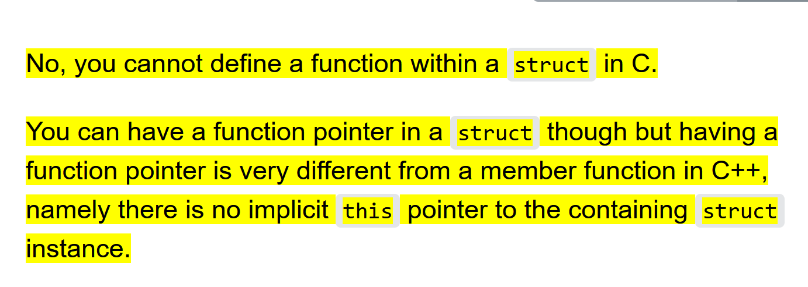

C Crash Course
[TOC]
C and Object Oriented Design
要注意到， Pointer 和 OO 的关系非常密切。 OO 通过 new 创建一个唯一的对象， 而 Pointer 能够访问一个唯一的对象。所以如果你想在 C 运用 OO设计，基本上都是要用 Pointer 完成 Parameter Passing 和 Return (方便 return 后在外面可以直接修改) 。
C并没有 OO 设计， 但你可以用 struct 和 function 实现。
但要十分注意，你必须 Pass-by-Pointer 来保证你可以通过 function 确实可以修改对象的内容。
typedef struct{
Node *head;
} Queue;
void append(Queue *q， T val){
...
}
void pop(Queue *q){
...
}
*T get_top_item(Queue *q){
...
}
使用 Pass-by-Pointer 才能修改正确的 Instance/对象(例如更改 Queue 的 head)。Pass-by-value 是无法修改原来Queue 的 Head （因为等于创建了一个新的对象。
为了能够直接修改 Node 内的内容，你也需要直接返回一个 pointer （允许在外部直接修改）。
Understand the function
- function phototype in header file
- function definition in
.cfile
Return 0 in Main function
为什么 C 返回 0?
- 0 代表 零错误。
- 其他数字可以作为错误代码。
- 查看程序是否运行成功
echo $?打印?environment variable
Linking
- C++的传统是 function prototype 和 definition 分离
#include一般只会复制插入 header files 。 注意 header files 只会含有 function prototype ，- 如果
#includeC 文件会怎么样？没错，会说 multiple implementation. - 但是
#includeheader file 的话， 就可以很方便地导入外部函数。因为 header file 里面根本没有实现，导入了也没事！
- Linker
- 在编译单个文件的时候， compiler 会直接忽视没有 definition 的部分，只会编译 prototype.
- 这保证了每个文件都可以被独立编译（如果只修改了一个文件，因为其他文件的编译都是独立的，所以并不会影响到其他分离的文件！）。
- 单个文件的缺失部分（就是 compiler 不知道的 definition/implementation 部分）被称为 symbol.
- Linker 可以填补程序缺失的部分 (连接 definition)，也就是 resolve symbols.
- 对于 shared libraries, 就是把 symbol 替换为 memory address. （不懂？了解一下 C++ memory layout）
- 对于 自定义的 libraries, 我不知道。。。。
String
注意到 sizeof(s) 和 strlen(s) 是有区别的。
假设你有
char s[10] = {'f', 'u', 'c', 'k'};
strlen(s) // 答案是 4
sizeof(s) // 答案是 10
sizeof(s)- 实际在内存中占用的位置
strlen(s)- 字符串的长度
还有另一个易错点，假设
char *s;
char ori_s[10] = {'f', 'u', 'c', 'k'};
s = ori_s;
strlen(s) // 答案是4
sizeof(s) // 答案总是 8, 因为一个指针的大小是 8
因为 char s[N] 和 char *s 两者是不同的数据类型！！所以 sizeof 也不一样！
Terminal 命令
展示所有 files (微内核)
ls /dev
你会看到 stdin 和 stdout.
Debugging C programs
Understand why pointers are dangerous and what is segmentation fault.
Defensive Programming
Always check return values from functions (such as
malloc()andfopen())Always initialise pointers to
NULLon creation (excluding initialization with assignment)Always check that pointers are not
NULLbefore deferencing themif (ptr_str) { ∗ptr_str = "FIT2100"; }
Use the fprintf(stderr) to print logfile.
The gdb debugger
A good way to debug is to set up breakpoint.
You should embed the error message into the program if you want to use gdb.
gcc [flags] −g <source files> −o <output file>
For example, compile source code sourcefile1.c, sourcefile2.c and so on to a program myprogram
gcc −g sourcefile1.c sourcefile2.c ... −o myprogram
To open gdb (one of the following command)
$ gdb
$ gdb myprogram
By entering the debugger (denote with (gdb) instead of $), you can specify which program to debug. Skip this step if you already specify the program while opening gdb.
(gdb) file myprogram
To test the program in gdb.
(gdb) run
If a segmentation fault occur, gdb can explicitly tell you what is this segmentation fault (instead just tell you segmentation fault....)
Other useful commands, to find out the line of code where your program crashed.
(gdb) where
or look at a stack trace of the function calls (the last one may the deepest error)
(gdb) backtrace
gdb breakpoint and step through
To manually insert the breakpoint into the source code/
(gdb) break 5 source.c :5
To break at line 5 of the current program
(gdb) break 5
To break a function named myfunction.c
(gdb) break myfunction
To remove breakpoints, use clear instead of break (to delete breakpoint at line 5)
(gdb) clear 5
To test the program in gdb.
(gdb) run
When the program hits the breakppoint, you could choose to
(gdb) step: step into function that is called (to deeper stack, look at the details of the function).(gdb) finish: finish the current function and break when it returns(gdb) next: step over the function that is called (treat the function as a command, and do not look at the details of the function)(gdb) continue: to the next breakpoint.
Like Visual Studio, you could look at the memory, and also see the content in the variable. The print and display command can display the content of a variable in the memory.
print: work as printf command in c. (it can automatically infer the type).print/x: print in hexadecimal (default format for memory)print/c: print as ascii code characters (simply decode the number to character)print/t: print in binary (not recommended)
(gdb) print myvariable
(gdb) print/x myvariable
or watch command. It is similar to subscribe, whenever the variable is updated, the debugger will notify you
(gdb) watch myvariable
To get help
(gdb) help [command]
To quit the debugger
(gdb) quit
Declare Local Variable
C programs run with stack, you need to know the size of the stack while adding new stacks.
That is the reason why you should declare all variables before you use it.
Memory Addressing
C 语言的内存最小单位是 Byte。 所以文件是 a sequence of bytes, 这方面的内容可以查看 操作系统的笔记。
同理 sizeof() 操作符返回的一定是 byte.
Understand standard I/O
stdinstdoutstderr- Literal characters and formattig characters (format specifier).
- It is interesting that you have
%pto specifier pointer in the standard I/O
- It is interesting that you have
- Why we should have pointer? see
scanffunction.- If reading a string? Should I use pointer? No, because the array identifier is the pointer to the first element.
- Modification needs pointer
Pointer
Read C++ Primer. Know * and &.
int *iptr;
int x = 3;
iptr = &x;
Know the void pointer, and why malloc should return a void pointer. (HInt: explicit type conversion or namely casting)
Accessing pointers (a good practice, never access a NULL pointer)
if (ptr){
// *ptr....
}
if ptr is NULL, the condition will not match.
Pass-by-Value
void addition(int x, int y)
Pass-by-Pointer
void swap_ref(int ∗xptr , int ∗yptr)
See how to access pointer in the pointer section....
Pass-by-array
I want to pass an array of integers
int sum(int n, int nums[]){
int ans = 0;
for (unsigned i = 0; i != n; ++i){
ans += nums[i];
}
return ans;
}
Understand the main function and passing an array to a function.
int main(int argc, char *argv[])
The pointer * is right-associativity, and array [] has higher precedence.
Hence, char *argv[] reads as the array of pointers, where the type in the array is char *.
To print all arguments while calling the function
int main(int argc, char *argv[]){
while(argc--){
printf("%s%s", *(++argv), (argc > 1) ? " " : "");
}
printf("\n");
return 0;
}
Note : (++argv) causes the pointer to point at argv[1]. since the first argument is in fact the program (command) name.
Expression
Each expression should genereate a value.
Statement
A sentence that consists of expressions that ending with ; symbol.
Multiple statements can be grouped together in a scope. That is statement blocks {}. The scope is a local stack. If you don't understand, look at the memory layout in C++ note.
Selective Structures
Read C++ Primer, if-else, switch
Iterative Structures
Read C++ Primer, for , while, do-while.
Structs in C
Define a function pointer in struct
C语言有 Member function 吗？没有，但有 function pointer.

To group data of different primitive types, it is the early version of data structure (but without methods inside it).
If you use a pointer to refer a struct in C, the thing will be interstring
#include <stdio.h>
struct person{
char name[10];
int age;
};
int main(){
struct person p = {"fuck you", 10};
struct person *ptrp = &p;
// pointer
printf("name: %s\n", ptrp->name);
printf("age: %d\n", ptrp->age);
// variable itself
printf("name: %s\n", p.name);
printf("age: %d\n", p.age);
return 0;
}
Note: you must use struct tag to refer to a struct type. You can think of struct persoon as a whole type. This is different from C++.
Structs and typedef
In ACM competetion, you often need long long
typedef long long int ll;
Or in C compiler, the size_t is in fact (signed number can be a problem!)
typedef unsigned long int size_t;
But think of how to use typedef with struct. The code will be cleaner
Person p = {"fuck you", 10};
Person *ptrp = &p;
The first approach is to think of struct person as a whole type.
typedef struct person Person;
But it seems that person keyword is redundant. Can we remove it? The answer is yes.
typedef struct {
char name[10];
int age;
} Person;
Now the struct itself is anonymous. But we have typename for it by typedef.
This can be useful when defining data structure, such as Binary Tree or Linked List.
typedef struct node{
int _val;
struct node *_parent;
struct node *_left;
struct node *_right;
} Node;
or linked list.
typedef struct node{
int _val;
struct node *_next;
} Node;
Note that, the typedef will activate at the end, that means you still need write the whole type struct node inside the function.
Multi-dimensional Arrays
The pre-allocated multi-dimension arrays
int arr1 [10][15];
The dynamic allocated arrays
int **create_2Darray (int dimx, int dimy, int initial_value){
int i, j; /* counters */
int **array;
/* allocate an array of pointers, the 2D array is an array of pointers.... */
array = (int **) malloc (sizeof(int *) * dimx);
/* populate each row. */
for (i = 0; i < dimx; i++) {
/* allocate an array of integers in a row. It should store the actual content*/
array[i] = (int *) malloc (sizeof(int) * dimy);
/* once the row is ready, fill elements in the row (row, column) */
for (j = 0; j < dimy; j++)
array[i][j] = initial_value;
}
return array;
}
To release the memory space
void free_2Darray (int **array, int dimx){
int i;
for (i = 0; i < dimx; i++){
/* free the memory of each row */
free(array[i]);
}
/* free the array of pointers*/
free(array);
}
Think about the difference between
int arr1 [10][15];
int ∗arr2 [10];
- The
arr1will take the size of 10*15 integer type. - The
arr2will take the size of 10 of typeint *.arr2is an array of pointers. Note that the pointers can beNULL. You have to explicitly alllocate space forarr2. - Why
arr2? Becausearr2can hold row of variable length.
Compilation
clang hello.c -o hello
Math Constant
How to use $\pi$ in C ?
https://docs.microsoft.com/en-us/cpp/c-runtime-library/math-constants?view=msvc-160
And link the shared C run-time library clang hello.c -o hello -lm
Others
- Read FIT2100-2020-Tute-01_2021SSB.pdf for details.
- Read FIT2100-2020-Tute-02_2021SSB.pdf for details.
- How to read double type task2-read-double.c
- How to generate random sequence in C task5-random-number.c
Low-level I/O
可以直接读取 array, struct 。都需要
struct student s;
read(fd, &s, sizeof(s));